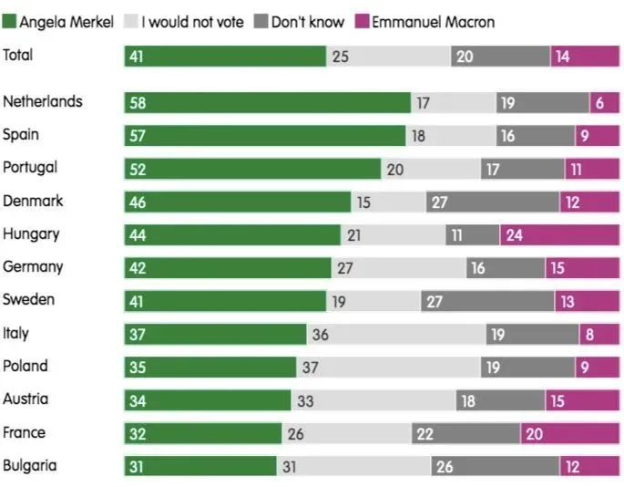
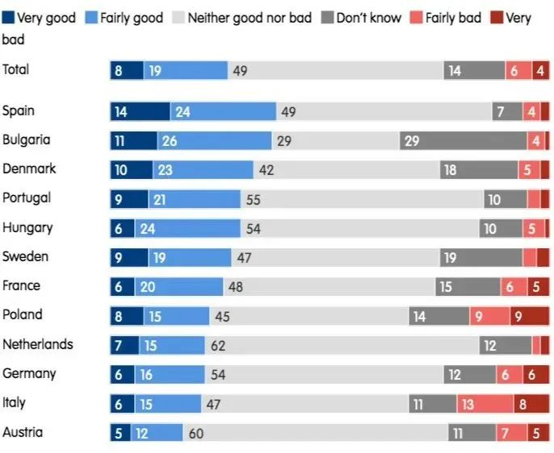
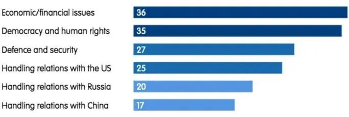
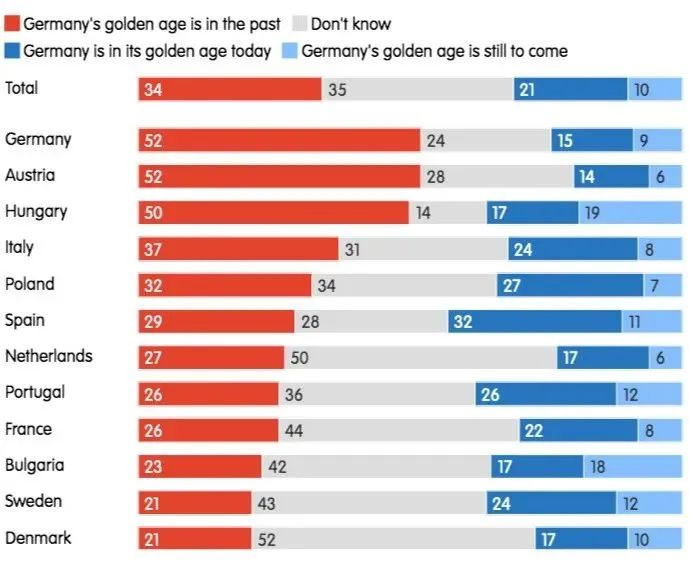
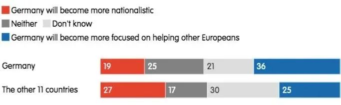

收录于合集
以下文章来源于欧亚系统科学研究会 ，作者Ahsen
 欧亚系统科学研究会 .
欧亚系统科学研究会 .
让系统增值，为创新添砖

**导语 **
今日，德国联邦议院将举行大选，这也意味着“铁娘子”默克尔即将结束长达16年的任期。欧洲人如何看待“后默克尔时代”的欧洲一体化前景？默克尔的政治遗产能否在德国及欧洲传承下去？
近日，欧洲对外关系委员会对12个欧盟成员国进行了一项民意调查，发现默克尔留给欧洲的政治遗产存在鲜明悖论 ： 一方面，默克尔成功改变了邻国对德国强势地位的恐惧，兼顾不同利益诉求的折衷调解风格，使她受到欧盟内部不同阵营的认可，成为欧洲人心目中的“欧洲总统”，并让欧盟公众对德国的领导角色充满信心；但另一方面，默克尔的成功是基于过去环境的不可复制的产物，下一届德国领导人如果仅仅延续“默克尔主义”，不仅不能巩固德国在欧洲的良好声誉，反而难以使其担当起领导欧洲、维护欧洲利益的重任。
默克尔主义无法延续的主要原因是，近十年来，欧洲一体化进程遭遇了 两大威胁 ：一是部分成员国政府的威权主义、民粹主义削弱了欧盟内部法治，并对其民主人权的价值原则构成挑战；二是在中美冲突、大国竞争日益激烈的形势下，欧盟开始担忧其地缘政治上的边缘化会损害欧洲的利益。这项研究认为，欧洲大多数人仍期望德国在经济金融问题和民主法治方面继续领导欧盟，但德国必须抛弃“默克尔主义”的折衷妥协做法，更加直接果断地捍卫欧盟内部法治以及欧盟在大国关系中的利益，才能让默克尔的政治遗产得以延续下去。欧亚系统科学研究会特编译此文，供读者思考，文章仅代表作者本人观点。
正文
在9月26日联邦议院选举前几周，德国人仍很难以想象一个没有默克尔总理的德国。默克尔是21世纪初德国时代精神的完美象征。她的政策风格和决策反映了德国的社会和政治在过去16年中发生的重大变化，以及通过避免革命性转变来尽可能久地维持现状的强烈愿望。难怪德国人会怀念她。
其他欧洲人也会怀念她吗？欧洲峰会没有了“欧洲女王”，也许就像阿加莎·克里斯蒂的侦探小说里没有了马普尔小姐。默克尔留给欧洲的遗产将是什么，它能持续多久？欧洲对外关系委员会（European Council on Foreign Relations，以下简称ECFR）对12个欧盟成员国进行的一项调查显示，尽管默克尔的政策经常引发分歧，但欧洲人倾向于将柏林方面视为具有整合力、值得信赖、有利于欧洲的势力。他们将默克尔视为欧洲的统一者——毫无疑问，她会坦然接受这一形象。
**
**
然而，她的继任者不应为此追求和她“更相似”的战略。ECFR 的数据表明，仅仅延续默克尔主义，并不能巩固德国在欧洲社会的良好声誉。 这就是默克尔遗产的悖论：德国的成功主要归功于不可持续的因素和已成过去的环境。换句话说，柏林方面近几十年来的作为提高了人们对德国的期望，即认为它有潜力成为饱受危机困扰的欧盟所急需的仁慈领导者，德国正在努力捍卫其价值观，并在新的大国竞争中找到一席之地。要发挥这一作用，柏林必须重塑自我。而其中最重要的是，修改掉那些让欧洲人把希望寄托于德国的默克尔主义原则。
01
使命达成：默克尔的德国是伟大的统一者
在默克尔执政期间，德国政府在欧盟的主张始终是“保持欧盟的团结”。作为欧洲的中心力量，德国希望被视为温和与和解的力量，而不是霸权。鉴于许多离心力强化了世界各地的民族主义和欧洲怀疑论，德国的首要任务是巩固和维护已有的成就。这在英国脱欧公投和特朗普当选美国总统后变得尤为显著。默克尔的目标是阻止欧盟关键政治支柱的崩溃，并加强其作为抵御自由主义国际秩序侵蚀的堡垒。 然而，与法国总统马克龙不同的是，默克尔并没有提出雄心勃勃的改革建议。相反，她主张采取谨小慎微、可供预测的步骤来应对欧盟面临的许多挑战。 换言之，她只做足以维持现状的改变。她的首要任务是使政治举措尽可能具有包容性，通常满足于欧盟内部的最低共同标准。她确信，欧盟内部没有就激进改革还是进一步一体化达成共识，马克龙雄心勃勃的企图只会导致欧盟分裂。
**
**
（1）默克尔当选“欧洲总统”
与马克龙相比，欧盟公民似乎更喜欢默克尔之道。 在回答ECFR关于“假如默克尔和马克龙是唯一的候选人，你会投票让谁当‘欧洲总统’”的假设性问题时，荷兰、西班牙和葡萄牙的大多数人表示，他们会选择默克尔 ，在其他被调查国家（包括法国）则占了相对多数。 总的来说，41% 的受访者会投票给她，只有 14%投给马克龙。在所有接受调查的国家中，这场竞赛并不势均力敌。尽管各国对默克尔的支持各不相同（例如，在荷兰的支持率比保加利亚高出 27 个百分点）。凭借其技术官僚的领导风格，她似乎比马克龙富有远见的演讲更能赢得欧洲人的信任。不仅在荷兰和西班牙，而且在葡萄牙和丹麦，默克尔都比马克龙更受欢迎，由此可知她能在欧盟不同角落发挥多大的整合作用：北欧的“节俭四国”和欧盟南部国家在欧洲政策的许多方面，尤其是经济和金融问题上，往往持截然相反的立场，而两个阵营对默克尔的支持率都很高，这似乎表明她成功地传达了这样一个信息，即德国是致力于解决双方关切问题的统一力量。

图源：ECFR
“假如默克尔和马克龙是唯一的候选人，你会投票让谁当‘欧洲总统’？”结果显示，所有国家都更喜欢默克尔而非马克龙（绿色：支持默克尔；浅灰：弃权；深灰：不知道；紫色：支持马克龙。）
（2）“我们对德国有信心”
回顾过去，默克尔在欧洲政策上的最大成功可能是让德国成为扩张后的欧盟的核心，并极大降低了邻国对德国主导地位的恐惧。 欧洲公众似乎不像布鲁塞尔的精英那么担心德国在欧盟机构中攫取的权力。如今，只有10%的受访者认为德国人担任欧盟委员会主席是件坏事，而 27% 的人甚至认为这是好事。最主要的反对来自意大利（21% 的人认为这是坏事，但同样有21%的人认为是好事）和波兰（18% 的人认为是坏事）的公民。然而，在所有国家，大多数或相对多数的人都不在乎欧盟委员会主席乌尔苏拉·冯德莱恩的国籍，人们并不认为她是德国政府的说客。

图源：ECFR
“德国人担任欧盟委员会主席，你认为是好是坏？”
结果显示，大多数人不在意欧盟委员会主席是德国人（深蓝：很好；浅蓝：比较好；浅灰：不好不坏；深灰：不知道；浅红：不太好；深红：很糟糕。）
今天的德国是一个领先的大国，许多欧洲人相信它能在一系列问题上捍卫自己的利益。 正如 ECFR 的数据所示，这种信心在经济和金融政策、捍卫民主和人权这两大领域表现最为明显。
在各国受访者对德国捍卫欧洲利益的信心程度中，经济和金融政策排在首位或紧随其后。这一发现似乎自相矛盾，原因有两个。首先，默克尔政府在欧元区危机期间对紧缩政策的支持，以及对公共债务和德国巨额贸易顺差的痴迷，比其他任何政策都受到更多批评。德国的经济政策被广泛认为是欧盟最大的矛盾，最终会导致欧盟解体。其次，经济理念各不相同的国家的公民都将德国视为欧洲利益的倡导者，持这一观点的比例在匈牙利（非欧元区成员）为50%，在西班牙（其政府希望欧盟成为财政联盟）为45%，在荷兰（“节俭四国”实际领导者）为43%。尽管这个数字在意大利仅为 24%，但它仍然是受访者中最受欢迎的选择。
这可能一定程度上是因为新冠疫情危机期间的德国政策，柏林方面在考虑所有成员国利益的前提下，努力在将NextGenerationEU（下一代欧盟）复苏计划纳入欧盟预算的问题上达成尽可能广泛的共识。另一个原因可能是，欧洲公民将德国视为一个经济强国，过去十年，它比许多其他欧洲国家更好地经受住了无数危机，因此，德国应该成为欧盟的榜样。
捍卫民主和人权，是他们最有信心的第二个政策领域。尽管默克尔一直反对把她归为“自由世界的领袖”，欧盟公民仍视她为自由欧洲的领导者。有理由假设，这部分反映了许多欧洲人赞赏默克尔在移民危机期间的立场。在 ECFR 的调查中，这种情绪在所有国家都很明显，包括匈牙利（49%）和波兰（23%），而这两国政府由于“严重违反”欧盟价值观，正处于《里斯本条约》第七条规定的制裁中。可以肯定的是，两国执政党的支持者压低了全国的平均支持率（只有 11% 的法律和公正党支持者和 28% 的青民盟支持者相信德国会捍卫民主。反对党中对德国有信心的人更多）。
与对德国捍卫欧洲利益的信心形成鲜明对比的是，欧洲人对德国处理与世界大国的关系信心相对较低。 超过三分之一的欧盟公民对柏林方面处理经济问题和捍卫民主价值观有信心，但只有17% 的人认为德国能引领欧盟与中国的关系。分别有五分之一、四分之一的欧洲人相信德国能处理好欧盟与俄罗斯、与美国的关系。欧洲人甚至在国防和安全事务上对德国更有信心，这可以让柏林那些担心德国对军事投入更多会引发邻国警惕的人放心。
这些发现证明，欧盟公民不一定相信德国会在大国竞争加剧的世界中领导欧盟保护他们的利益。柏林方面在地缘政治领域的信誉有限，尤其是与其他政策领域相比。
这可能不足为奇。默克尔的对华政策很大程度上取决于德国的国家经济利益，而不是更广泛的地缘政治考虑。人们很难认为这项政策已经“欧洲化”了。在俄罗斯吞并克里米亚后，默克尔建立了一个共同的欧洲阵线（她的主要外交政策成就之一），但她坚定不移地支持“北溪二号”的外交政策却损害了她的这项政治遗产。尽管德国政府把自己标榜为欧洲联合外交政策的倡导者，但其邻国仍持怀疑态度。

图源：ECFR
“你是否对在以上各个领域扮演领袖角色的德国捍卫欧盟利益有信心？”结果显示，大多数人对德国在处理经济/金融和民主/人权议题上信心较大。但是在地缘政治议题上，则信心相对不大。
所有接受调查的国家（匈牙利除外）的受访者一致认为，如果默克尔没有担任总理，世界会发生更多冲突。 但这并不意味着她被视为和平的力量：多数人认为，她在总理任期内没有对世界各地的冲突带来影响。这表明在近年来的外交政策危机中，德国政府的外交（和军事）努力要么被忽视，要么无效。
与此同时，欧洲人认为欧盟需要成为一个更团结、更强大的国际事务参与者。ECFR在2021年春季进行的一项调查表明，欧洲人强烈意识到，在大国竞争的时代，他们必须更多地依靠自己。即使拜登入主白宫，人们仍然普遍对美国重新成为西方“领袖”的能力缺乏信心。美国从阿富汗撤军已经表明，拜登奉行以狭隘的国家利益为主的外交与安全政策，他不希望美国再扮演“世界警察”的角色。因此，欧洲人认为有必要与包括俄罗斯、中国和土耳其在内的各个国家建立战略伙伴关系，并提升欧盟的全球地位。
02
默克尔主义的昏暗未来
在满足欧洲各地、利益不同的欧盟公民的期望方面，默克尔留下了令人难忘的印象。在默克尔的领导下，德国似乎实现了中心的领导地位并使欧盟团结在一起。默克尔的声誉归功于在巧妙平衡各种利益从而让各方都满意的政策风格。不可否认，她的坚持不懈取得了显着的成果，NextGenerationEU复苏基金的成立和欧盟对俄罗斯的制裁就是明证，如果没有她的调解技巧，二者都不可能实现。 默克尔的遗产之一便将是让欧盟公民相信德国是欧洲强国，这种信任和认可构成了重要的政治资本，为后默克尔时代的德国提供了坚实的领导力基础。
然而，保持中立、避免强硬解决欧洲困境的政策，似乎并不是应对未来挑战的可行方法。想要所有人都参与进来，并使欧盟凝聚力成为绝对优先事项，会限制一个人的行动能力。欧洲面临的许多最紧迫的挑战都无法用默克尔的方法解决。应对流行病、气候变化和日益激烈的地缘政治竞争，不仅需要表面上的改变，还需要对更激进的解决方案提供政治支持。 默克尔主义不太可能比默克尔更长寿，这不是因为只有默克尔能实践它，而是因为欧盟需要一个更有远见和勇气的德国为其巩固其基础并捍卫其世界地位。
（1）欧洲新格局
默克尔主义寿命有限的主要原因是过去十年间欧洲一体化的性质发生了变化。随着默克尔的下台，这一点变得越来越明显。今天的欧盟和欧洲人出现了一幅令人不安的图景：一个因价值观而分裂的大陆正面临新的威胁。德国代表的、成为默克尔政策支柱的折衷协调，未来将更难实现。最重要的是， 默克尔的离任恰逢欧洲计划面临的两大挑战，需要与默克尔不同的策略。
第一个挑战是捍卫欧盟的价值观和原则。 默克尔未能防止欧洲法治危机的失控，可能是她的欧洲政策最大的失败。如果没有柏林当局的默许，匈牙利总理维克多·欧尔班就不可能崛起。德国在这个问题上的消极态度源于对政党的忠诚（青民盟一直到2020年都是欧洲人民党成员，欧洲人民党包括默克尔的基督教民主联盟）；德国公司在匈牙利维谢格拉德地区的经济利益；也许是最重要的，是默克尔主义强调风险规避，惧怕冲突。所有这些都阻止了德国在为时已晚之前采取行动，让欧尔班有机可乘。
对波兰也采取了类似的态度。默克尔在阻止围绕波兰司法独立的冲突升级方面发挥了重要作用，却徒劳地希望达成能让双方满意的折衷结果。危机在 2021 年7月达到顶峰，彼时，波兰政府反对欧盟法院 (CJEU) 在成员国失去独立性时对其司法系统进行干预的权力。这一权力的削弱将导致欧盟法律秩序的崩溃。欧盟基本价值观（欧盟法律的至高无上、欧洲法院的角色、司法独立和少数族裔权利）一旦崩溃，可能会摧毁欧盟。如果后默克尔时代的德国想要保护欧洲计划以及默克尔的大部分遗产，它就必须公开采取果断行动，打击那些攻击欧盟基本价值观的人。
第二个挑战与塑造欧盟新议程的进程有关。 欧盟内部的发展不再是影响欧盟政治方向的主要因素。一个自由、安全、繁荣和社会公正的欧洲现在面临着来自外部的巨大威胁，而且没有做好对抗的准备。欧盟议程越来越受到外部问题的影响。气候危机迫使欧盟从根本上重新考虑其经济和社会议程，这导致欧洲绿色协议的诞生。美国外交政策重心从欧洲转向别处，正在迫使欧盟改变其安全政策，转向更具战略意义的独立自主。中国的崛起，让欧盟面临制定一个连贯而节制的政策的需要，来应对已成为全面竞争对手的中国。
未来十年，欧盟的世界地位可能会下降，欧盟面临的主要挑战将是捍卫其治理模式并使其现代化。 默克尔保持中立的做法将不再可行，尤其是在中美冲突日益主导世界事务的形势下。因此，在未来几年，德国在大国关系中的弱势会越来越成问题。德国将不得不离开它在默克尔时代的舒适区。新的德国政府必须比以往更清楚地表明，它是从欧洲而非德国的利益出发看待与中国和俄罗斯的关系。它需要引领一条具有鲜明欧洲立场的“后独立的”大西洋主义。
（2）德国之星的衰落
德国会迎接这个新政治格局带来的挑战吗？尽管欧洲人对德国持感激态度，但 多数欧盟公民认为德国是一个衰落的强国。
在12个接受调查的国家中，34%的受访者认为德国的黄金时代已成为过去，21% 的受访者认为默克尔时代似乎标志着德国繁荣的顶峰，他们同意德国现在正处于黄金时代的观点。只有10%的欧洲人认为，德国的黄金时代尚未到来。西班牙和瑞典的相对多数受访者认为现在的德国比过去更辉煌。德国、奥地利和匈牙利大多数人则认为德国的过去比现在更辉煌。有七个受访国中“不知道”占了多数，值得注意的是，荷兰和丹麦这两个德国的邻国是其中“不知道”占比最高的。

图源：ECFR
“你认为德国正处于黄金时代或即将迎来黄金时代，抑或已经告别黄金时代？”结果显示，大多数欧洲人认为德国已经告别黄金时代（红色：黄金时代已经过去；灰色：不知道；深蓝：正处于黄金时代；浅蓝：黄金时代尚未到来。）
有趣的是，多数欧洲人认为德国的黄金时代已经过去，但会选择默克尔而不是马克龙担任欧洲总统。这表明，不仅在德国，而且在更广泛的欧洲，默克尔作为政治人物比她的统治成果更受好评。 没有默克尔，德国在欧盟的领导地位基础将大大削弱，除非新政府实施超越默克尔主义的可靠战略。
如果许多欧洲人认为德国之星在衰落，这可能会降低他们对柏林的信心。他们对默克尔领导下的德国持肯定态度，似乎与该国过去二十年稳定的经济增长和低失业率有很大关系。与过去不同的是，现在德国的实力和繁荣营造出了可靠的合作伙伴形象。
从ECFR的数据来看，将德国黄金时代视为现在或未来的欧洲人比其他人更有可能相信柏林在一系列问题上领导欧盟的能力。可以将其视为默克尔时代非凡成就的又一标志：人们似乎并不惧怕强大的德国。
由此可见，认为德国的辉煌岁月已成为过去的人占比很高（34%），他们对柏林的领导地位缺乏信心。例如，26%的人不相信德国会在此项调查涉及的任何问题中捍卫欧洲的利益。
这种整体情况表明，如果对德国繁荣的怀疑在欧洲变得更加普遍，欧洲人可能会越来越不愿意将柏林视为欧洲主义的支柱。新冠疫情危机暴露了德国对其基础设施的忽视和对数字化投资的不足。此外，中美地缘政治冲突加剧，对严重依赖全球化与出口的德国经济构成巨大挑战。 对德国经济日益增长的怀疑，将削弱人们对其领导欧洲能力的信心，严重阻碍其领导欧洲的能力。
（3）德国人的悲观主义
默克尔时代的相对成功，并不一定转化为德国人积极的自我认知。他们中的大多数人并不认为自己的国家是欧盟的主导力量。 与其他欧洲人相比，德国人对德国未来的悲观情绪更为普遍。
52% 的德国人认为他们国家的黄金时代已经过去。 迄今为止，他们是欧洲人中对自己国家的未来最悲观的。德国人似乎也没有为领导欧洲的角色做好心理准备。只有在捍卫民主和人权方面，超过三分之一（38%）的德国人相信他们的国家可以维护欧洲的利益。在经济金融问题以及国防安全问题上，与其他欧洲人相比，德国人对柏林的欧洲领导力的信心较低。虽然 29%的其他欧洲人相信德国在国防安全方面处于领先地位，但只有20%的德国人相信这一点（在12个接受调查的国家中比例最小）。同样，37%的欧洲人对德国在经济和金融问题上的领导地位感到满意，但仅有31% 的德国人对此满意（这一比例低于除了意大利人、波兰人和法国人之外的任何国家）。20%的德国人不相信德国能够在 ECFR 调查涵盖的任何问题上发挥领导作用（在所有国家中所占比例仅次于波兰和奥地利）。其他欧洲人则不那么悲观：只有15% 的人不相信德国会在研究涵盖的任何问题上捍卫欧洲的利益。
与此同时，德国人并不担心他们会重新陷入民族主义。 只有 19%的受访者认为存在这种风险，而在其他11个接受调查的国家中，这一比例为 27%。反过来，36%的德国人希望他们的国家更专注于帮助其他欧洲人，远高于其他接受调查的国家25%的数字。因此，德国人对本国的意图有相当积极的想象，但似乎并不认为他们国家的领导能力是对其他成员国有可靠、积极作用的先决条件。在后默克尔时代，这种结论可能是不可取的。 德国人需要摆脱对德国领导力的怀疑，因为其他欧洲人正指望着德国提供这一能力。

图源：ECFR
“你认为德国会变得更民族主义还是更乐于帮助欧洲人？”结果显示，德国人对德国变得更民族主义的担忧比其他欧洲人低。（红色：更民族主义；深灰：两者皆否；浅灰：不知道；深蓝：更乐于帮助欧洲人。）
03
从团结欧盟到捍卫欧洲模式
在后默克尔时代，德国将不得不承担新的责任。这种转变不仅关系到即将卸任的总理取得的重大成就密切相关，而且还与以下事实密切相关：在默克尔的领导下，德国政府取得大多数对欧洲计划有强烈情感的欧盟公民的信任和支持。 在他们眼中，德国似乎是西方价值观的灯塔，包括民主和法治，同时德国也是欧盟在困难时期的支柱。他们寄希望于德国捍卫欧洲秩序。这使德国成为卓越的欧洲强国。
为了满足这些要求，后默克尔时代的德国必须重新调整其外交政策和欧洲政策的战略，离开舒适区，超越默克尔主义。 默克尔时代的特点是在不断加剧的内外压力下保持欧盟团结。而在后默克尔时代，这还不够。除了保持欧盟团结之外，捍卫欧洲核心价值观和利益的目标，应该成为一个负责任的欧盟领导层的衡量标准。特别是未来几年，德国需要带头对抗欧盟面临的两大威胁。
第一个威胁是欧盟法治崩溃，这是由一些成员国政府的独裁倾向造成的。 欧洲的政治格局越来越被“民主与专制”、“世界主义与民族主义”的分歧所界定，默克尔的德国在弥合这些分歧上发挥了重要作用，很多情况下甚至避免了分歧，但未来德国可能需要成为欧洲价值观原则的果断捍卫者，在应对冲突时，对专制、民族主义的一方不再友好，并学会接受为此付出的代价。如果没有司法独立的共同标准、对欧盟条约第二条和第十九条所载的价值观的尊重，至关重要的是，如果不承认欧洲法院是解释这些原则的最终仲裁者，欧盟就无法生存。正是这些基本规则受到了民粹主义者和独裁者的攻击。抱有妥协的微弱希望而让步将导致历史性的失败。同样重要的是，让认同欧洲价值观并反对民族主义的欧盟公民失望，也会带来灾难性后果。这些将希望寄托在德国领导地位上的公民，他们的参与和态度是欧盟在困难时期的未来发展的关键。
第二个威胁是欧盟的地缘政治边缘化。 长期以来，德国的朋友和伙伴一直呼吁德国发挥更大的国际作用。默克尔本人也承认，欧盟完全依赖他国的时代已经“一定程度地结束了”，欧洲人需要更多地保障自己的安全并捍卫自己在世界上的利益。德国是其中的关键参与者。现在是它最终发挥作用的时候了。在许多方面，默克尔主义（通常伴随着重商主义）之所以成为可能，是因为美国领导了西方集团，而基于规则的多边秩序似乎正团结一致。随着世界进入马克·伦纳德（Mark Leonard）所说的“不和的时代”，情况变了。默克尔的离任，则是西方联盟这一历史性转变的象征。
正如 ECFR 的民意调查数据显示，欧洲人意识到了这一新的现实，并为欧洲在世界上的作用日益减弱感到担忧。更重要的是，他们承认地缘政治竞争对欧洲计划的生存构成了威胁。德国必须对这些恐惧和期望做出新的反应。
通常情况下，柏林必须明确捍卫欧盟原则、国际规则、民主、法治和人权。它需要找到一条出路，走出“北溪二号”事件中给自己设下的死胡同。它还需要利用其经济和政治影响力，与拜登政府实行跨越大西洋的密切合作，以联合应对中国。这意味着德国必须选择站队，哪怕不惜造成冲突和紧张局势的代价。
后默克尔时代的柏林领导层面临的主要挑战，将是说服德国人改变欧洲和外交政策的齿轮，既符合欧洲的利益，也符合他们自己的利益。正如一种观点所说的，德国决策者和政治家应该少谈德国因其历史、规模和地理位置而在欧洲负有特殊责任，而是解释欧盟如何帮助德国增加其影响力、促进其繁荣并保护德国公众。 “慕尼黑共识”可能塑造了默克尔时代最后几年的外交政策话语，即认为德国的国际参与应该更早、更果断和更实质的信念。但现在需要达成一个“柏林共识”。它将在新的地缘政治环境中，把对欧洲价值观更具原则性的立场，与所需的战略和资源结合起来。这将是确保默克尔的遗产比默克尔主义更长久的最佳方式。
文｜Piotr Buras, Jana Puglierin
翻译｜Ahsen
来源 | 欧洲对外关系委员会
排版 | 牛子悦
文章观点不代表本平台观点，本平台评译分享的文章均出于专业学习之用, 不以任何盈利为目的，内容主要呈现对原文的介绍，原文内容请通过各高校购买的数据库自行下载。